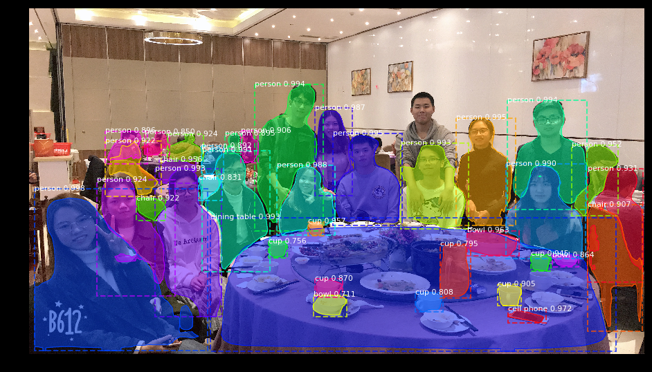

Competitions Notes¶
Kaggle 细胞核识别¶
Introduction¶
https://www.kaggle.com/competitions
Find the nuclei in divergent images to advance medical discovery (2 months to go)
目标要创建一个自动化细胞核检测算法，加快医学研究。官方给出了一些测试集和训练集，问题可以转化为在图像中找到特定的目标？(这个是机器学习/CV在医疗方面的应用，比较感兴趣，但可能需要医学背景，待讨论)
关于题目更多的背景介绍可以看 这里。
TODO¶
| task | 完成情况 | time |
|---|---|---|
| mask-rcnn环境搭建 | ✔ | |
| mask-rcnn training |
Notes¶
U-Net
U-Net: Convolutional Networks for Biomedical Image Segmentation
一个做医学图像分割的网络，数据集是International Symposium on Biomedical Imaging (ISBI)的 workshop 比赛。Kaggle上有个Kernel实现这个U-Net：
- Windows 下的Mask-RCNN编译
-
- Github repo:
- https://github.com/CharlesShang/FastMaskRCNN (在windows下跑不通..)
- https://github.com/matterport/Mask_RCNN (亲测可行)
先放个第二个repo的效果，第一个repo跑不通，记录在后面。 
CSDN上有个对第二个repo的踩坑记录(http://blog.csdn.net/u011974639/article/details/78483779?locationNum=9&fps=1)
Mask_RCNN/model.py是Mask_RCNN的resnet101实现；Mask_RCNN/train_shapes.``是用自己数据集训练Mask_RCNN的一个demo，其中 ``ShapesDataset类下的load_image()、load_mask()、image_reference()方法需要重写以向外提供数据。- 下面是第一个repo的踩坑记录:
- How-to:
- Go to
./libs/datasets/pycocotoolsand runmake - Download COCO dataset, place it into
./data, then runpython download_and_convert_data.pyto build tf-records. It takes a while.（要先解压） - Download pretrained resnet50 model,
wget http://download.tensorflow.org/models/resnet_v1_50_2016_08_28.tar.gz, unzip it, place it into./data/pretrained_models/ - Go to
./libsand runmake - run
python train/train.pyfor training
- Go to
Windows平台下编译 1. 时需要先将
FastMaskRCNN\\libs\\datasets\\pycocotools下的setpy.py的-Wno-cpp和-Wno-unused-function编译参数去掉（如下）ext_modules = [ Extension( '_mask', sources=['./common/maskApi.c', '_mask.pyx'], include_dirs = [np.get_include(), './common'], extra_compile_args=['-std=c99'], ) ]
另外，运行
python download_and_convert_data.py时可能会遇到以下报错：Gray Image 287422 >> Converting image 23701/82783 shard 9 >> Converting image 23751/82783 shard 9 >> Converting image 23801/82783 shard 9 Traceback (most recent call last): File "download_and_convert_data.py", line 39, in <module> tf.app.run() File "D:\Python\Python35\lib\site-packages\tensorflow\python\platform\app.py", line 48, in run _sys.exit(main(_sys.argv[:1] + flags_passthrough)) File "download_and_convert_data.py", line 33, in main download_and_convert_coco.run(FLAGS.dataset_dir, FLAGS.dataset_split_name) File "E:\research\poc\FastMaskRCNN\libs\datasets\download_and_convert_coco.py", line 457, in run dataset_split_name) File "E:\research\poc\FastMaskRCNN\libs\datasets\download_and_convert_coco.py", line 303, in _add_to_tfrecord img = img.astype(np.uint8) TypeError: int() argument must be a string, a bytes-like object or a number, not 'JpegImageFile'
关于这个Issue可以看这里：https://github.com/CharlesShang/FastMaskRCNN/issues/33, 其中一个解决方法就是将
[296]: img = np.array(Image.open(img_name))改成[296]: img = np.array(Image.open(img_name), dtype=np.uint8)（貌似是数据集的问题，还是解决不了⊙﹏⊙，换第二个repo试试）
{kind=link}
{kind=link}
{kind=link}